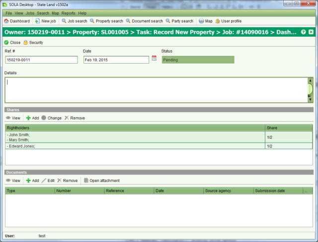
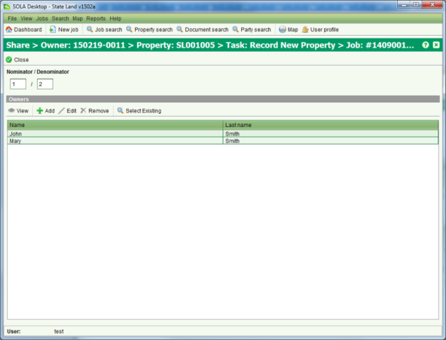

The Ownership Interest screen is used to display information for interests that have
rightholders with a defined share in the interest. For example, the owners of a property can
include multiple parties with each party allocated a specific shareholding. The Ownership
Interest screen can be accessed from the Interests tab on the Property Details screen by
selecting an Owner interest and clicking View
or
View
or  Edit.
Edit.

Ownership Interest
When adding a new share to an Ownership interest, you must indicate the shareholding as a fraction (e.g. ½) and list the parties that hold that share.

Ownership Share
Shares can be used to can represent Tenants in Common and Joint Tenancy scenarios. Tenants in Common occur when two or more parties have a specific share identified. Joint Tenancy occurs when two or more parties are named on the same share. SOLA State Land can support combined Tenants in Common and Joint Tenancy scenarios as illustrated above.
To create, change or cancel an ownership interest you must first lodge a job with the appropriate task e.g. Record New Property, Maintain Property, Record Interest, Change Interest or Cancel Interest.